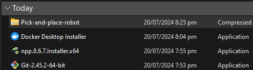

In opening again the project:
- Open Docker Desktop App
- Open Unity Hub App
- Open Windows PowerShell
- Type ‘docker run -it --rm -p 10000:10000 unity-robotics:pick-and-place /bin/bash’
- Type ‘roslaunch niryo_moveit part_3.launch’
Find the pick-and-place file that you downloaded from the Google Drive Link, then extract the pick-and-place zip file to ‘C:\’ drive or the main hard drive (SSD) of Windows.
Open your Windows PowerShell, then navigate the project directory. Type the cd .. twice to move up two directories, then type dir to list the contents of the current directory.
Next, use cd change directory commands to navigate to the pick_and_place. Type cd .\pick-and-place\ to change the current directory to the pick-and-place folder. Next, type cd .\Unity-Robotics-Hub\ to move into the Unity-Robotics-Hub directory, and then cd tutorials to access the tutorials subdirectory. By executing cd .\pick_and_place\, you will enter the pick_and_place folder.
Type git submodule update --init --recursive to initialize and update any git submodules recursively, ensuring all nested repositories are up to date. Finally, build a Docker image using the command docker build -t unity-robotics:pick-and-place -f docker/Dockerfile ., which tags the image as unity-robotics:pick-and-place and uses the Dockerfile located in the docker directory to define the build process.

The next step is to run the Docker container by typing docker run -it --rm -p 10000:10000 unity-robotics:pick-and-place /bin/bash. This command will open the Docker Desktop application. When prompted, click 'Allow access'.
Note: If you encounter an error, you should see if the docker desktop is open to run the code.
Lastly, open your Unity Hub and press the ‘Add’ button. Navigate to your main hard disk and find the project by following this path: ‘pick-and-place’ > ‘Unity-Robotics-Hub’ > ‘tutorials’ > ‘pick_and_place’ > ‘PickAndPlaceProject’. This will add the Unity project to your Unity Hub, allowing you to open and work on it.
If you get a warning like this, you should install the required Unity Editor version and Visual Studio Community version.
In opening again the project: